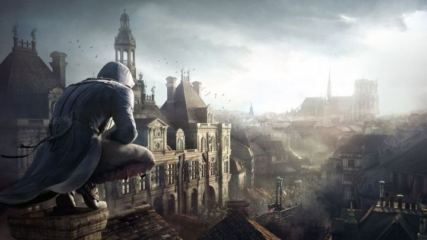

In 2008 a game company named Ubisoft developed a game called Assassin's Creed. This series depicts a fictional millennia-old struggle between the Assassins, who fight for peace with free will, and the Templars, who desire peace through order and control. This series gained a lot of populariity and one of the main reasons the game is popular because the game takes place in certain times throughout history for example one game takes place in Ancient Egypt, while another takes place during the american revolution. For this page we will be looking at some popular settings with Assassin's Creed and some notable characters.
Fun facts about the Assassin's Creed:
Although the game is fiction, the setting and some of the history is real. The series takes on important setting and stay true to the history. On the picture to the left is a setting set in Turkey during the Ottoman Empire. The game is called Assassin's Creed Revalations and follows the story of the main protaganist named Ezio Auditore who sets his journey in Turkey. The city Constaniople gets it name from a roman emporer named constanine In 1511 the city is under rule by the Ottoman Empire. Before the Bizintine emprire was the most powerful empire but by the time ottoman empire came around the population died down and quickly ran by the Empire. Even though he made the city mostly muslim he invited other europeans to come to the city. This location was really important because the city had access to different trade routes and made it the best way to make money. The location takes place at a pivotol point where it was the battle to pick the next sultan. Sulieman became the next sultan and was widley popular throughout history.
In Assassins Creed 3 we take the location in the America specifically in 1775 where America started the revolution against the british. We will take a look at what started this war. One key factor was the Stamp Act that happened in 1765 the british taxed them on the stamps they purchased and it led to some disagreement. Another factor was the townshend act that taxted goods that the americans imported from Great Britian. The Boston Massacre sparked tension between the Boston residents and the british soldiers. An unknown spark happened which the british fired at a crowd and really made the americans unhappy. When Lexington and Concord happened thats when the war happened and at first great britian was taking the lead but later in the war the french aided the americans and won the war.
The next location the series takes next is in France specifically in 1789 during the French Revolution. The French Revolution lasted for 10 years and the revolutionaries started from a prison called the bastille. Why did the war happen, it happened because the Estates or the higher class gets to pay lower taxes and enjoy their rich lifestyle while the lower class gets to pay higher taxes and have a poor lifestyle. At that moment the people had enough and started the revolution which they overthrew King Louis XVI. The outcome from this revolution completely changed the social and political structure of France. It put an end to the French monarchy, feudalism, and took political power from the Catholic church. It brought new ideas to Europe including liberty and freedom for the commoner as well as the abolishment of slavery and the rights of women.
The next installment Assassin's Creed Syndicate takes place during the Industrial Revolution. The Industrial Revolution was a time when the manufacturing of goods moved from small shops and homes to large factories. This shift brought about changes in culture as people moved from rural areas to big cities in order to work. It opened up to new technologies, new types of transportation and a new way of life. The Industrial Revolution began in Great Britian (where assassin's creed syndicate takes place) in the late 1700s to the mid 1800s. The Industrial Revolution brought about many cultural changes. Before the revolution, most people lived in the country and worked on farms. During the revolution, people moved to the cities to work in factories. Cities grew and became overcrowded, unsanitary, and polluted. In many cities, poor workers lived in crowded and unsafe buildings. This was a dramatic shift in the way of life for the average person. One drawback of the Industrial Revolution was poor working conditions for people in factories. There were few laws to protect workers at the time and working conditions were often dangerous. People often had to work long hours and child labor was a common practice. By the end of the 1900s, labor unions and new laws began to create a safer working environment.